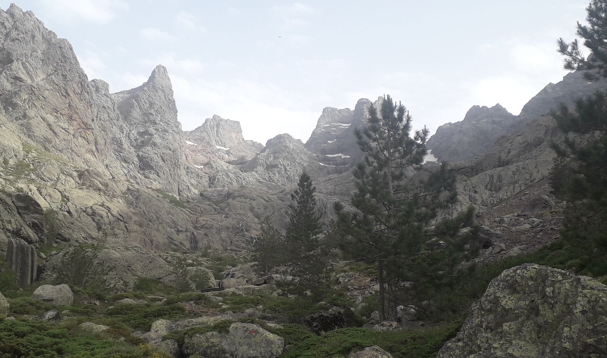

Day five Two hikers passed by the next morning as I woke up. It was not even six o'clock in the morning but not wanting to be spotted by to many people, I decided to pack my belongings as quickly as possible. (...)  The highest mountain in Corsica, the Monte Cintu. Published on 07/10/26 | Updated on 07/10/26